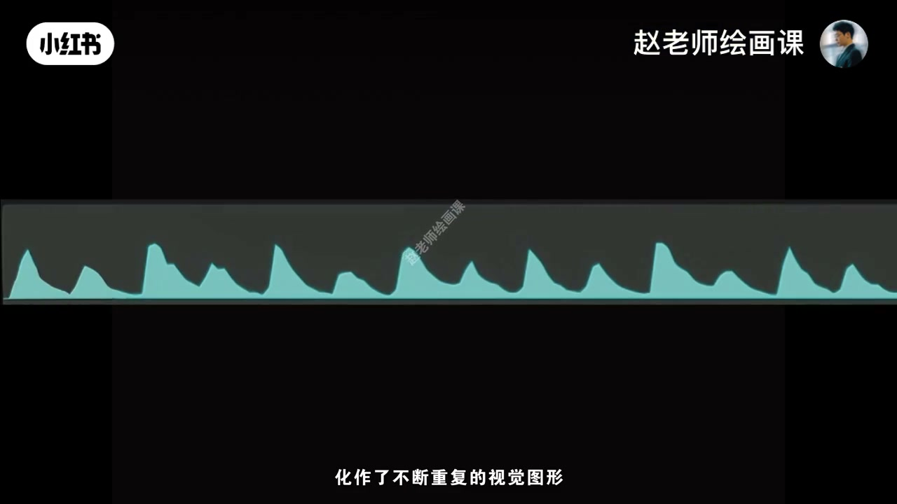
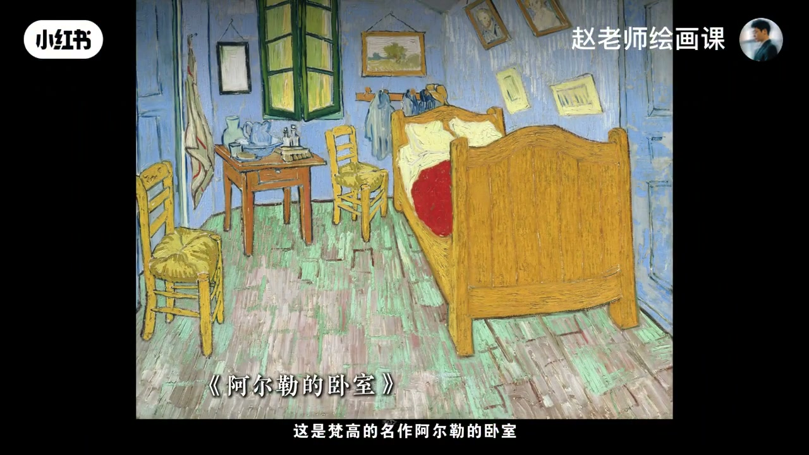
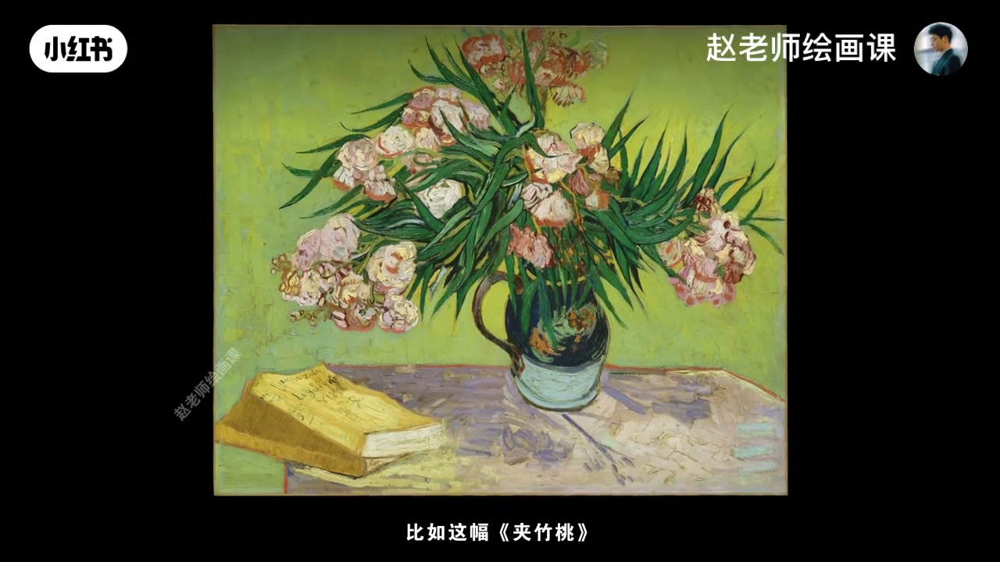
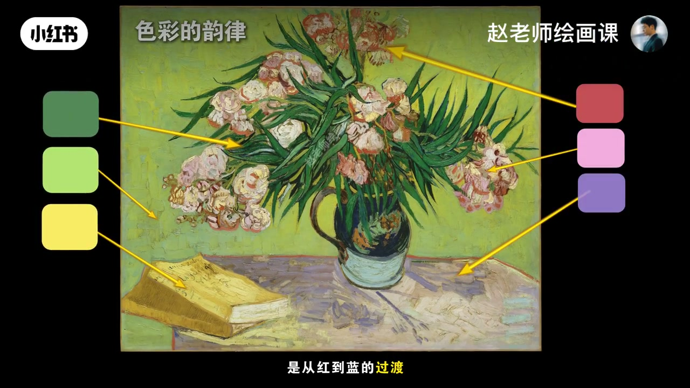

内容要点
若梵高去学音乐，或许也是名垂青史的大师——绘画同样有节奏与韵律。节奏：声波起伏化作不断重复的视觉图形；可用黑白交替、冷暖重复、形状规律变化做成视觉节拍。韵律：蜿蜒起伏的旋律感，对应色彩过渡、笔触走向、形状渐变组合。《阿尔勒的卧室》蓝灰底里暖黄块如跳跃音符；黄椅→橙红桌→红被形成黄到红色相渐变，物品环抱传递温暖。《夹竹桃》冷中有暖暗中有亮的规律重复，并伴多条色相渐变。学大师不在挖生平轶事，而在作品里获审美启发。
知识结构
节奏＝重复节拍；韵律＝过渡与渐变。
卧室黄块重复＋黄→红渐变；夹竹桃冷暖重复＋色相过渡。
冷暖交替与细腻渐变；学作品启发而非轶事。
梵高不是「只靠感觉」乱涂：节奏管重复节拍，韵律管过渡渐变——二者相辅相成，才温馨又活泼。
00:00-01:21从音乐听懂视觉节奏与韵律
先听轻快音乐再看音轨：声波起伏化作不断重复的视觉图形，节奏就被翻译成画面。视觉上，黑白交替、冷暖色重复、形状规律变化都能做成节拍感。
继续听会感到蜿蜒起伏的旋律——这就是韵律；色彩过渡、笔触走向、形状渐变组合都是韵律的体现。00:30 声波可视化是桥梁。

01:21-02:31《阿尔勒的卧室》与《夹竹桃》
《阿尔勒的卧室》：蓝灰背景里暖黄块不断重复，像跳跃音符，轻松活泼；黄椅到橙红桌再到红被，形成黄到红的色相渐变，物品摆放构成环抱形，传递温暖。节奏与韵律正是整幅温馨又活泼的关键。
《夹竹桃》：从左下书到右侧花，冷中有暖、暗中有亮规律重复；书→背景→叶是黄到黄绿再到绿，花瓣到桌面红到蓝，叶到桌面绿到蓝。01:25／02:05／02:25 可指认。



02:31-03:26无一笔草率，致敬在作品里
纵观这些作品：没有一笔草率随意，也没有一块颜色不存在浓烈情感。最后一件作品同样靠冷暖交替重复显活泼，靠多处冷到暖细腻渐变注入诗意。
学习大师不在挖掘生平轶事，而在从作品获得审美与智慧的启发——这才是对天才最好的致敬。
完整转录（70段）
以下文本由 Whisper medium 模型自动转录，可能存在少量识别误差，已尽可能修正。
樊高如果当年去学音乐
那他一定也会成为名垂青史的音乐大师
今天我们就借助樊高的画
一起感受绘画中的节奏与韵律
先来听段音乐
是不是轻快又动感
再看看他的音轨
声波的起伏化作了不断重复的视觉图形
神奇吧
音乐的节奏就这样被翻译成了画面
在视觉意识中
节奏可以通过黑白交替
冷暖色重复
形状的规律变化来呈现
说白了就是一种视觉上的节拍感
来继续听
好 停
除了节拍
是不是还有种蜿蜒起伏的旋律感
音轨也呈现出了对应的变化
对 这就是韵律
色彩的过渡
笔触的走向
形状的渐变组合都是韵律的体现
这是樊高的名作《阿尔勒的卧室》
你发现其中的节奏了吗
在蓝灰背景里
暖黄色块不断的重复著
它们就像跳跃的音符
让画面显得轻松与活泼
再仔细看
从左边的黄椅子到中间的橙红桌子
再到右边的红被子
形成了一种由黄到红的色相渐变
物品的摆放也构成环抱的形状
传递出一种温暖感
这种节奏与韵律
正是整幅画面温馨又活泼的关键
好的作品中啊
节奏与韵律总是相辅相成的
比如这幅《夹竹桃》
从左下角的书到右侧的花
都体现了冷中有暖暗中有亮的规律重复
同时还伴随著色彩渐变
从书本到背景再到叶子
是从黄到黄绿再到绿
上方花瓣到桌面是从红到蓝的过渡
叶子到桌面又是从绿到蓝的渐变
震撼吧
纵观这些作品
没有任何一笔是草率随意的
也没有一块颜色不存在著浓烈的情感
现在让我们带著这份对大师的赞叹
来看今天的最后一件作品
它的节奏在哪
是画中冷暖交替的重复
让整体显得活泼又跃动
是多处从冷到暖的细腻渐变
又为整幅画面注入了无尽的诗意
我想我们学习大师
并不在于挖掘他的生平仪式
而是从他的作品中
获得审美与智慧的启发
这才是对天才最好的致敬
如果你想提升绘画创作或审美能力
想真正看懂大师之作
欢迎关注我即将推出的形式美构成课程
下一期想看谁的作品
评论区告诉我吧
拜拜